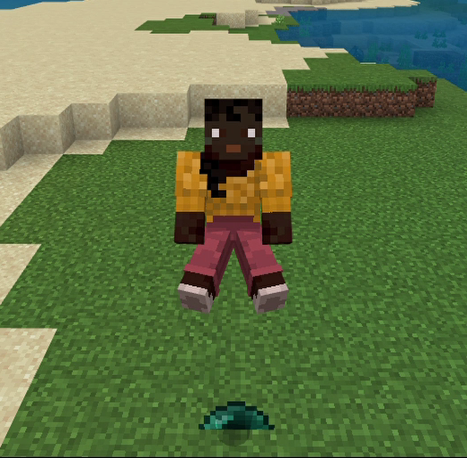
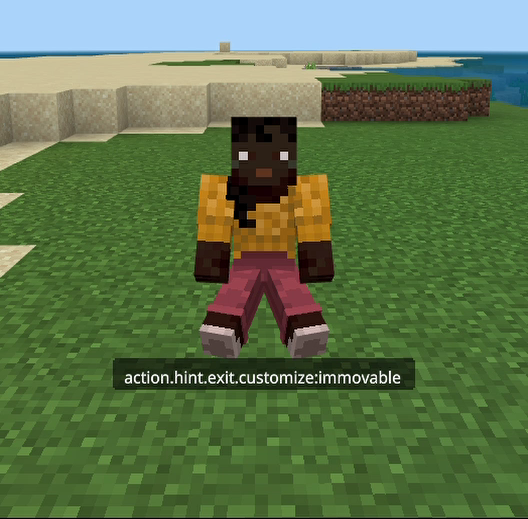
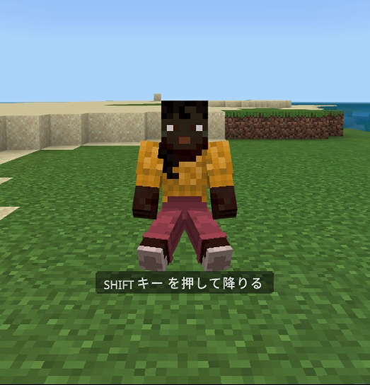
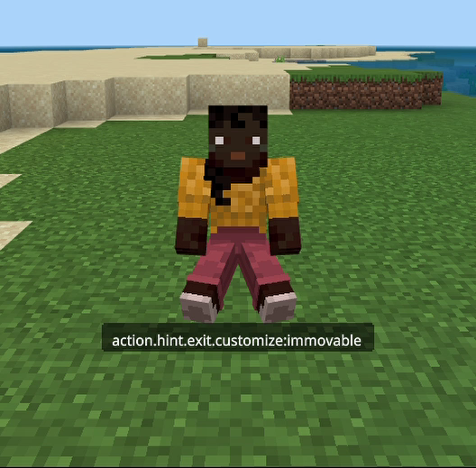
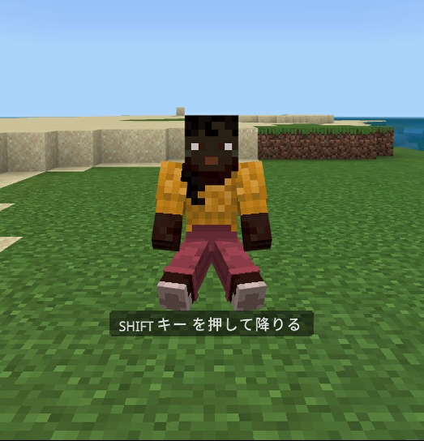

【座れるエンティティ】
はじめに
ここでは
※基本的な部分は▶ダミーエンティティのページでダミーエンティティが実装済みである事を前提に進めていきます。
※「汎用ブロック」とは、上記ページの「コンポーネント定義」の項目でご紹介した
componentsブロックのJSONデータの内容を、「汎用ブロック」と「座れる設定」の２つのパートに分けて座れるエンティティの作り方をご紹介します。※基本的な部分は▶ダミーエンティティのページでダミーエンティティが実装済みである事を前提に進めていきます。
※「汎用ブロック」とは、上記ページの「コンポーネント定義」の項目でご紹介した
componentsブロックの便宜上の呼称です。定義ファイルの内容
ここでは▶不動の杖で使っている以下のダミーエンティティのファイルを例に取り上げます。
<ビヘイビアパック>/entities/immovable.json
上記のコメントのように、大きく分けて「汎用ブロック」と「座れる設定」の２つのパートに分けています。
以下ではパート分けしたそれぞれの内容をみていきます。
<ビヘイビアパック>/entities/immovable.json
{
"format_version": "1.17.10",
"minecraft:entity": {
"description": {
"identifier": "customize:immovable",
"is_spawnable": false,
"is_summonable": true
},
"components": {
// 汎用ブロック -----START
"minecraft:breathable": {
"breathes_solids": true,
"breathes_water": true
},
"minecraft:collision_box": {
"height": 0.0,
"width": 0.0
},
"minecraft:pushable": {
"is_pushable": false,
"is_pushable_by_piston": false
},
// 汎用ブロック -----END
// 座れる設定 -----START
"minecraft:rideable": {
"seat_count": 1,
"crouching_skip_interact": true,
"family_types": [],
"seats": [
{
"position": [ 0.0, 0.0, 0.0 ]
}
],
"pull_in_entities": true
}
// 座れる設定 -----END
}
}
}
上記のコメントのように、大きく分けて「汎用ブロック」と「座れる設定」の２つのパートに分けています。
以下ではパート分けしたそれぞれの内容をみていきます。
汎用ブロック
・minecraft:breathable
座らせる相手によっては色んな場所でスポーンさせる事があり得るので、エンティティが呼吸できるブロック、あるいは場所を設定しています。- breathes_solids（=true）
- 固形ブロック内で呼吸できます。
- breathes_water（=true）
- 水の中で呼吸できます。
これを設定しておかないと召喚してもすぐにデスポーンしてしまう事があるので注意が必要です。
・minecraft:collision_box
ここでは衝突判定が作動しないように高さ・幅共にゼロで設定しています。- height（=0.0）
- 高さなし。
- width（=0.0）
- 幅なし。
・minecraft:pushable
上記のcollision_boxが設定されている場合に限りますが、モブ等によって押し出される事があるので無効になるように設定しています。- is_pushable（=false）
- モブ等からの押し出しは無効。
- is_pushable_by_piston（=false）
- ピストンによる押し出しは無効。
・minecraft:physics
上記のJSONファイルでは定義されていませんが、これを定義しない事で物理法則が適用されないようにしていますので敢えて書かせて頂きました。エンティティを召喚した場所が空洞になっていた場合、物理法則があると下に抜け落ちてしまうので未定義としています。
座れる設定
・minecraft:rideable
- seat_count（=1）
- 座れる人数を指定します。
- family_types（=[]）
-
座れるファミリータイプをリスト形式で指定します。
現在は空配列を指定する事で全ファミリーを指定していますがfamily_typesの定義自体をしなくても同じ動作になります。
- seats（=[{"position": [ 0.0, 0.0, 0.0 ]}]）
-
座るポジションを相対座標（[X, Y, Z]）で指定します。
例えば[ 0.0, 2.0, 0.0 ]とした場合、以下みたく浮いたように見えます。

※ダミーエンティティはテスト用のスプライト表示にしています。
- pull_in_entities（=true）
-
family_typesで許可されている近くのモブを座席へ引き込みます。
より確実に座らせるために今回は定義を入れています。
多言語設定
あと忘れてはいけないのが多言語設定です。
カスタムエンティティの場合は
<リソースパック>/texts/en_US.lang
プレイヤーが座った時に「Shiftを押して降りる」という表示を目にされた事があると思いますが、この部分は上記の
今回はダミー用途なのでエンティティの名前やスポーンエッグの名前はなくても問題ありませんが、この設定がないと以下のようにキーそのものが画面に表示されてしまうので注意が必要です。
▼設定がない場合

▼設定がある場合

カスタムエンティティの場合は
en_US.langファイルが規定の言語ファイルになるので以下のファイルに記載する必要があります。<リソースパック>/texts/en_US.lang
entity.customize:immovable.name=<カスタムエンティティの名前>
item.spawn_egg.entity.customize:immovable.name=<カスタムエンティティのスポーンエッグの名前>
action.hint.exit.customize:immovable=:_input_key.sneak: を押して降りる
プレイヤーが座った時に「Shiftを押して降りる」という表示を目にされた事があると思いますが、この部分は上記の
action.hint.exit.<エンティティID>で設定されている文章です。:_input_key.sneak:というプレースホルダの部分はスニーク時のキーの名前で置換されます。今回はダミー用途なのでエンティティの名前やスポーンエッグの名前はなくても問題ありませんが、この設定がないと以下のようにキーそのものが画面に表示されてしまうので注意が必要です。
▼設定がない場合

▼設定がある場合
